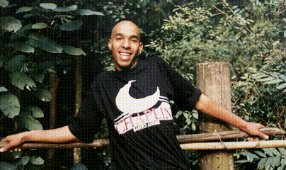

44+obras
6M+views
Anos 90samba
Um exemplo concreto de como um legado pode ser organizado, valorizado e expandido.

A Laia Music é uma plataforma de gestão, preservação e expansão de legados musicais. Transformamos memória artística em ativos culturais vivos, conectando gerações.
A Laia Music nasceu da necessidade de preservar, organizar e expandir o legado artístico de Edney Fernandes. Mais do que uma marca, é uma estrutura dedicada à gestão de catálogos e desenvolvimento cultural.
Combinamos direção cultural, organização estratégica e construção de valor.
Organização e expansão de obras e repertórios.
Estratégias para manter viva a memória artística.
Direcionamento estratégico para projetos e artistas.
Construção de narrativa, identidade e posicionamento.
A trajetória de Edney Fernandes inspira a base da Laia Music.

Um exemplo concreto de como um legado pode ser organizado, valorizado e expandido.
A Laia Music conecta legado, educação e inovação através do Instituto.

Um projeto cultural e educacional que transforma legado em impacto social.
Trabalhamos com quem entende a música como legado e potência cultural.